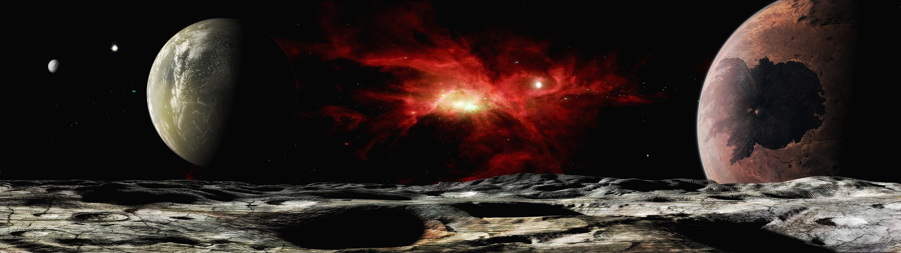
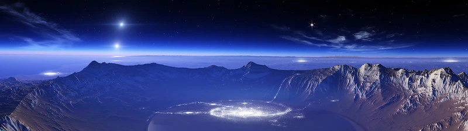

Sometime this year the two thousandth planet will be discovered outside our solar system. The vast range of
discoveries that have been confirmed are almost certainly outliers in the billions of worlds thought to
exist, brought into focus by relatively weak technologies that are biased in favor of anomalies. So far,
these include:
the burnt cinder of PSR B1257+12 B, whirling around a pulsar: the first exoplanet discovered in
1992.
massive "hot Jupiters" that circle their stars well inside the orbit of Mercury, drawing bow wakes of
stellar
material behind them.
Systems with seven detected planets (HD 10180).
Discovery Techniques
Pulsar timing remains the easiest method to find exoplanets, but the inimical nature of their parent
stars
make the worlds extremely unlikely candidates as sources for life. More recent detection techniques have
their own limitations:

Radial velocity
The measurement of a planetâ€'™s orbital tug on its star, causing a rhythmic “wobble†in the position
of
the parent star. Due to their differences in mass, the technique is best at detecting exoplanets that
are
very large (Jupiter mass or above) and/or very close to their star.
Transit
A exoplanet moving in the same plane as our line of sight will partially “eclipse†its star during
moments of its orbit. If this dip in perceived brightness occurs at regular intervals, an orbiting body can
be inferred. Obviously the larger the planet and/or the further it orbits from its star, the greater the dip
in received light and the easier the detection
Reflected light
A planet will reflect the light of its star in phases as it orbits, just as the moon does as it circles the
Earth. While the amount of reflected light will be very small compared to the central star (the common
comparison is the ability to perceive the glow of a lit match held at arms length from a lighthouse beam),
the method is useful for large Jupiter-sized bodies orbiting relatively close to their host star.
Gravitational microlensing
Light can be bent by its transmission medium (such as water) or by passing beside a large gravitational mass.
The most extreme variations of the latter effect are observed around supermassive black holes and galaxies,
but planets have the same effect on starlight, albeit much more subtly.
Because such alignments of exoplanets and background stars are very rare, the most likely opportunities come
from observations directed toward the galactic core, where the density of stars is highest.
Exoplanet detection is a long, slow process: a candidate will need to complete at least one full orbit (its
own relative “yearâ€) before it can be confirmed. While terrestrial equipment has been used in the hunt
for planets, the greatest gains in exoplanet detection have come from satellites, particularly the Kepler
NASA space observatory and (led by the French Space Agency). Other projects with greater resolution,
such as the Terrestrial Planet Finder and Darwin, are unfortunately on hold or cancelled at this time. The
James Webb Space Telescope, a visible-wavelength-to-infrared detector, should also have the opportunity for
imaging planets after it is launched in 2018.
"CoRoT (French: Convection, Rotation et Transits planétaires; English: Convection, Rotation and planetary Transits) was a space telescope mission which operated from 2006 to 2013. The mission's two objectives were to search for extrasolar planets with short orbital periods, particularly those of large terrestrial size, and to perform asteroseismology by measuring solar-like oscillations in stars.[3] The mission was led by the French Space
Agency (CNES) in conjunction with the European Space Agency (ESA) and other international partners."
Possible Detection of Life?
So far we have a dataset of just one planet confirmed to support life: we know it exists on Earth. The
flourishing evolutionary diversity of life on Earth is entirely dependent on water, which implies that other
planets capable of supporting biological life must be within the habitable zones of their parent stars
(neither so close as to boil, nor freezing when they are too far out). Other heating methods to produce
liquid water are possible, from vulcanism to the gravitational tugging of a large planet on a smaller
ice-covered worldlet, seen in Saturn's moons Enceladus and Mimas.

"The search for extraterrestrial intelligence (SETI) is a collective term for
scientific searches for intelligent extraterrestrial life, for example, monitoring electromagnetic radiation for
signs of transmissions from civilizations on other planets."
While projects such as have so far failed to detect the presence of intelligent extraterrestrial life
using radio frequencies, there exists the intriguing possibility that we may detect intelligent life by
observing the atmosphere of an exoplanet.
Such detection is not likely to be achieved by seeing the night-glow of an alien city through a telescope:
the power to resolve those kinds of details is more than a century away, if it is achievable at all. Rather,
alien life might be inferred through the presence of elements, via spectrography.
As a planet transits past its parent star, light is refracted through its atmosphere. By teasing apart the
spectrum of the light received here on Earth and observing the absorption lines, it is possible to determine
the chemical composition of a planet’s atmosphere, together with information like wind speed and
direction. As our instruments become more precise, we should be able to resolve the atmospheres of
ever-smaller planets… and if we ever find oxygen, or a high proportion of methane, we will have found
life, as it is only biological life that can produce those elements.
Taking this a step further, we should also be able to detect the presence of artificial chemicals in an
atmosphere, such as vinyl chloride mononomers. This will be an unmistakable sign of an industrial society,
as no natural process that produces such compounds.
Given the increasingly desperate state of our own planet’s ecosystem, it is deeply ironic that our
discovery of intelligent life elsewhere in the Universe may come from the detection of another world's
pollution.